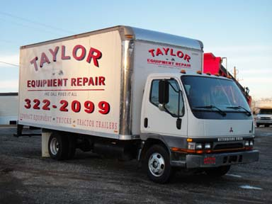
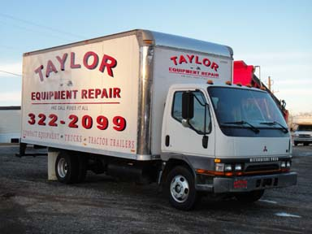

A great way to promote your business or product is by advertising on your vehicle. It's like having a moving billboard! Our staff has extensive experience with vehicle graphic installation. We have a digital printer, laminator and vinyl cutter, which allows us to print and cut your graphics on site. We install both vinyl and digital graphics, as well as wrapping vehicles. Our shop has a drive-in bay which allows indoor installation for most vehicles. We have installed graphics from small cars to 18 wheelers. Whether you know what you want on your vehicle or need advise as to what will be most effective for your vehicle(s), call or email us and we'll be happy to assist you.


Illuminated signs are made from many different types of substrates and different types of lighting. This section demonstrates a wide variety of custom made illuminated signs. If you need assistance with what types of materials or sign will work best for you, please feel free to email or call, and we'll work with you to create a custom illuminated sign that will work best for your business. Our staff values your business and is committed to providing quality products for our clients. We welcome both local clients and national accounts. And as always, our success depends on your satisfaction.

When choosing the substrate for your sign there are many choices available. You could choose plastic, wood, acrylic, aluminum, corrugated plastic (Corroplast), foam board and more This website demonstrates a wide variety of custom signs. If you need assistance with what types of materials or sign will work best for you, please feel free to email or call, and we'll work with you to create a custom sign for your business. Our staff values your business and is committed to providing quality products for our clients. And as always, our success depends on your satisfaction.